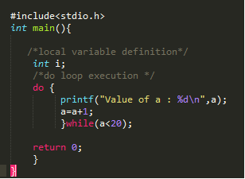

Unlike for and while loops, which test the loop condition at the top of the loop , the do...while loop in C programming checks its condition at the bottom of the loop.
A do...while loop is similar to a while loop,except the fact that it is guaranteed to execute at least one time.
do {
statement(s);
}
while(condition);
Notice that the conditional expression appears at the end of the loop, so the statement(s) in the loop executes once before the condition is tested.
If the condition is true, the flow of control jumps back up to do, and the statement(s) in the loop given condition becomes false.
In do...while loop the statement executes once while the condition true or false.
